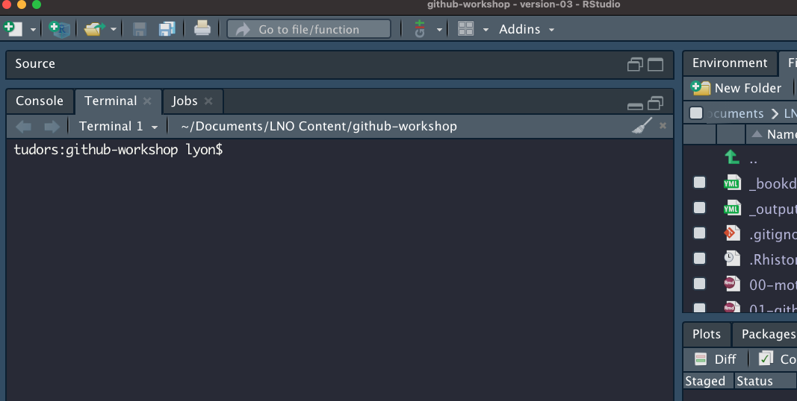
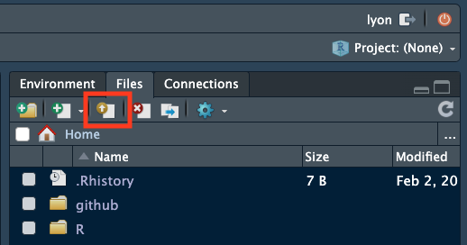
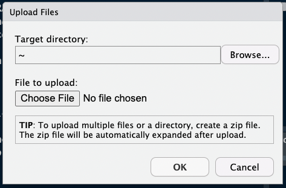
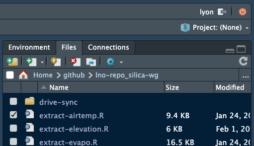
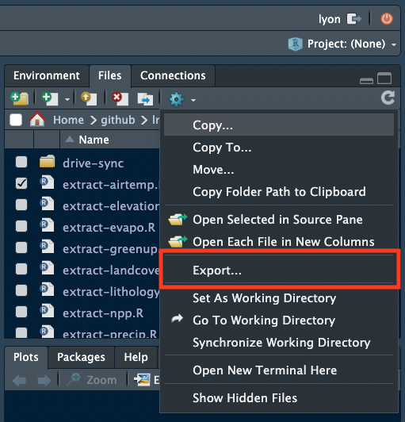
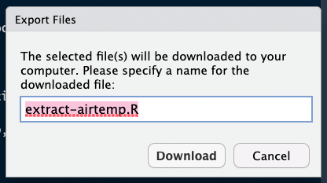
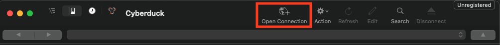
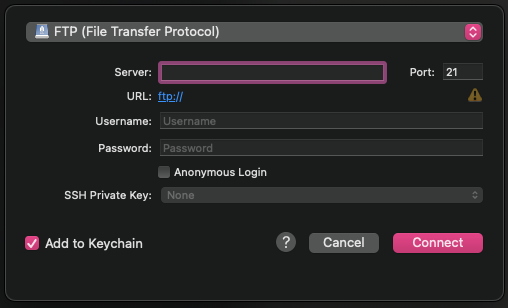
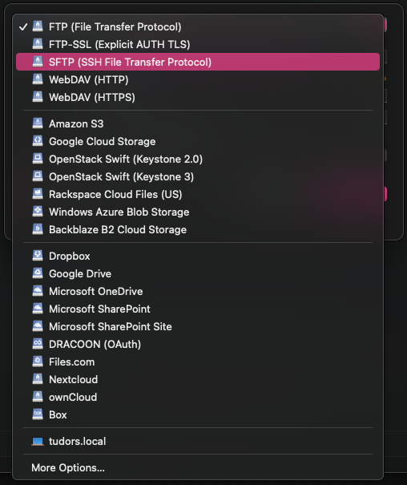

git config --global credential.helper 'cache --timeout=10000000'NCEAS’ Server
Module Learning Objectives
By the end of this module, you will be able to:
- Summarize the primary steps for getting set up on a server
- Connect your GitHub self with your server self
- Explain at least one way of uploading data to a server
Overview
Working on NCEAS’ Server is similar to working on an entirely separate computer from the laptop or desktop computer on which you typically work. This means that you need to go through the steps of connecting GitHub to your “RStudio” again for the instance of RStudio accessed through Aurora. GitHub’s Personal Access Token is referred to as “token” hereafter for simplicity. Note that our server also runs other analytical tools such as JupyterHub for python users.
Often the reason to engage with the server is to increase the scale of your analyses far beyond what your personal computer can handle. There are other advantages such as:
- Storage Capacity – More disk space & faster storage
- Computing Power – More CPUs & RAM (384GB!!)
- Security – Nightly backups and data are distributed across multiple drives
- Collaboration – Shared data & consistent software versions accessible to everyone on your team
Getting Started on the Server
Necessary Software
The only software that you will need on your personal computer to get set up on NCEAS’ server is RStudio!
You likely have worked in the “Console” tab of RStudio (where run lines and outputs appear; see below) but RStudio has another tab to the right of the “Console” called “Terminal” which offers RStudio users access to the command line (a.k.a. the shell). If you are a veteran command line user you may prefer to use the standalone Terminal app on MacOS or PuTTY on Windows but for the sake of keeping your tool kit streamlined, we’ll walk through getting set up on NCEAS’ server using only RStudio’s Terminal tab.

The Terminal does not accept R syntax (and the Console doesn’t accept Terminal syntax) so you may notice that some of the code we’ll walk you through below is formatted differently than you would write an R script.

Get Invited!
In order to access the server (and follow the instructions below) we’ll need to create an account on the server for you. Please email someone on our team or scicomp@nceas.ucsb.edu so that we can contact NCEAS’ IT team and get an invite email sent to you.
In that email, please include the name and email addresses of all of your team members who want to access the server. After that information has been received, NCEAS’ IT team will create accounts for all of those people and will send you an invitation email to set up your account on the server.
An example of what that email may look like is included below but there are two key pieces of information:
- Your username
- Your temporary password (covered by a red bar in the screenshot).
If you have not received that email, check your Spam folder for emails from Thomas Hetmank (hetmank@nceas.ucsb.edu) or Nick Outin (outin@nceas.ucsb.edu). If you have not received the email and it is not in your Spam, reach out to our team and we will work to get an invite sent to you.

Signing into the Server
In the following instructions, all words that look like this should be typed into the Terminal tab and run by pressing return or enter. Note that typing these commands into an R script or R Markdown will not work because it will attempt to run in the Console. All words that look [like this] (i.e., bracketed) should also be typed into the Terminal tab but the specific text should be replaced in a user-specific way that is clarified in the nearby text.
In the Terminal pane of RStudio, you will “ssh” into the server by running the following code:
ssh [your username]@aurora.nceas.ucsb.edu. It is @aurora because the name of the server is Aurora.If this is the first time you’ve accessed the server you will need to enter
yesto accept the server’s SSH key.You will then be prompted to enter your
[temporary password](see the above email example). Note that the cursor will not advance as you type but it is registering your entries! There will be no indication that you are typing (such as: “•••••••••”) This throws off many users so hopefully the above note helps set your mind at ease.You will then be prompted to change your “expired” password. We consider your temporary password to be expired as soon as you use it because sharing passwords via email is not secure and this “expiration” lets you set the password to something that only you know at the outset of your time in the server. Note again that the cursor will not advance as you type but it is working! To update your password, enter your
[temporary password], then[your strong new password]and finally re-type[your strong new password]to confirm it. Note that your new password should not be “your strong new password” :)You are ready to go! Run
exitto log out of the server in the Terminal tab.Now that you have set a new password, use your favorite web browser (e.g., Firefox, Chrome, etc.) to access Aurora and click “Login to RStudio Server”
In the resulting page, you can sign in with the same username and password you just signed in on the Terminal tab with.
You should now be in something that looks very much like RStudio but is housed in a tab on your browser! We will work together from here on out so once you have reached this point, let our team know and we can gather the group before continuing.
If the above steps have not resulted in successfully accessing Aurora, consult NCEAS’ instructions on first login and/or SSH-specific instructions for Mac vs. Windows and/or email us!
Connecting GitHub and the Server
Your server “self” is essentially a different computer that you access via a browser (or command line in some cases). Because of this, you will need to tell GitHub that your server self is allowed to access your GitHub self’s content. To do this you’ll need to authenticate via personal access token or SSH key pair. Revisit our authentication instructions in the “Workshop Preparation” section of the workshop home page for details.
TipServer + PAT Note
If you choose token-based authentication you’ll also need to tell the server to store your token for some amount of time otherwise the server will “forget” it between sessions.
In the Terminal pane of the server’s RStudio session run the following code:
This tells your server self to remember your token for 10 million minutes (roughly 20 years).
Optional Other Steps
You may want to configure additional settings, such as:
- The default branch name (for new repositories)
usethis::git_default_branch_configure(name = "main")Working on the Server
Once you’re properly set up, working on the server should be completely seamless! Instead of opening RStudio on your computer you’ll open a browser and work on the server from there but otherwise the feeling and process of version control should be identical. Eventually you may even want to make commits on your computer, push them to GitHub (after pulling!), then pull those same commits down to your server self and continue working there.
You’ll find working on the server to be dramatically faster for computationally-intense operations so we hope this guide has been helpful in getting you prepared to take advantage of that benefit!
Uploading Data to the Server
Via RStudio
If you are uploading a single file, it may be most convenient to use RStudio’s data upload capabilities. In the “Files” pane (default is top right but it may differ on your computer), you can click the button that is a white rectangle with a yellow circle with an upward facing arrow inside of it. In the below image the relevant button is in a red square.

Clicking that button allows you to choose (1) where you want the uploaded file to go and (2) which file you want to upload.

You can also download data via the RStudio interface. To download a file, check the box next to it in the “Files” pane.

Once the box is checked, click the gear icon then click the “Export…” option (about halfway down). In the image below this option is surrounded by a red square

In the resulting box you can choose to rename the file before downloading to your local computer. After renaming the file (or keeping its original name), click the “Download” button and the download should begin after a moment.

These methods are effective for one or a few files being up/downloaded to the same directory but can quickly become cumbersome if you want to handle many files or a few files to several different folders.
Via sFTP Software
If you want to upload or download many files we recommend using sFTP software (secure File Transfer Protocol). We use Cyberduck internally, though there are alternatives like WinSCP. Both programs are free to use and more than capable of uploading and download many files to/from the server quickly and easily.
Once you have installed one of these programs, you can sign in to the server from the sFTP program using your server username and password and can then upload or download files from your personal computer in the same way as you would move files among folders within your personal computer.
Cyberduck Set Up Tutorial
Here we briefly demonstrate how to set up a connection between Cyberduck and NCEAS’ Server. Note that you must have already installed Cyberduck to follow these steps.
- In the Cyberduck window, click the “Open Connection” button with an icon of a globe with a plus sign. In the below image the button has a red square around it.

In the resulting window, input the following information:
- “Server” – “aurora.nceas.ucsb.edu”
- “Username” – whatever your username on the server is
- “Password” – your password to the server
- “Port” – change it to “22” (it will start as “21”)

- Also, click the dropdown menu at the top that says “FTP (File Transfer Protocol) and select”SFTP (SSH File Transfer Protocol)” from the set of available options.

- Once you’ve input the above information, click the “Connect” button and you should have access to the server! You can now click around the different folders you have access to and upload or download from there.
- To download: click the files/folders that you want and they should begin downloading to your personal computer
- To upload: drag and drop the files where you want them
Via the Command Line
If you are more comfortable with a CLI (Command Line Interface) you can also use that method of uploading/downloading. The command line includes the Terminal pane in RStudio, Terminal app for Macs, PuTTY, and gitBash among others. CLI can be a great tool to leverage filenames or types to filter specific files you would like to upload / download. Text in code chunks below are command line commands and any bracketed text [like this] should be replaced by some user-specific information before running.
This portion of the tutorial is focused on using the command line to interact with the server. That said, if you’re interested in the command line more generally or for other purposes, please reach out to our team!
CLI Option A: scp
The scp command can be used to upload a file or folder from your computer to the server.
1A. Navigate to the folder on your computer containing the file(s) you want to upload
cd [folder]- Note that if the folder name has spaces you’ll need to “escape” the space by using a backslash (
\)
cd [folder\ name]2A. Now you can upload that file to the server!
scp [file_name] [user]@aurora.nceas.ucsb.edu:/[path/to/destination_folder/]If instead you’d like to upload all of the files in a folder, do the following:
1B. Navigate to the folder containing the folder on your computer you want to upload (using cd)
cd [folder]2B. Use scp with the recursive option (-r) to upload all of the files in that folder
scp -r [folder] [user]@aurora.nceas.ucsb.edu:/[path/to/destination_folder/]- Note that this uploads all of the files in the folder not the folder itself so you may want to create a new folder on the server to upload your local folder’s contents into.
Finally, note that you can also download files from the server to your local machine by simply switching the order of the machines:
scp [user]@aurora.nceas.ucsb.edu:/[path/to/server_folder/file_name] [local_folder] CLI Option B: sftp
The get command can be used to download a file.
- Connect to the server
sftp [user]@aurora.nceas.ucsb.edu:/home/sharesYour prompt at the shell should now have switched to sftp> and although it is the same window you are now looking at the files on the server! Try it by typing the ls command at the prompts. This will list all the files and folders within the shares folder on Aurora.
- Enter your group’s folder in the
sharesfolder
cd [your_group_folder]- If needed, continue using
cdto get to the subfolder you want to access. Remember to “escape” any spaces in the folder name with backslashes!
cd [subfolder]Note that most of the bash command will work, so you can use ls to list files and pwd to check your current path.
- When you are in the folder containing the file(s) you want, download the file you want
get [file_name_server]- You can also upload a local file to the server by using the
putsFTP command
put [file_name_local]- When you are done downloading, close the connection to the server
exit